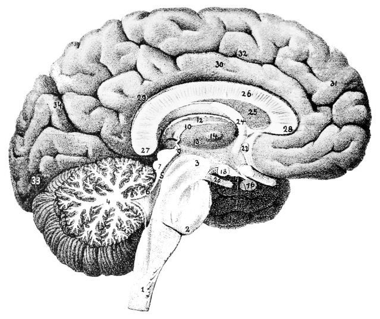

He died at age 87, most probably due to the cancer in his lungs. Aside from that, I knew very little of the man who lay before me. And yet, after many hours laboring over his body, dissecting and excavating, our little team of five or six volunteers got to know him in an unusually intimate way. Over the course of three days, we removed and uncovered brains and muscles, intestines and fat. Most of us first-time dissectors, we followed the instructions of our leader, a third-year student at Dell Medical School named Thomas Varkey.
Thomas is a close friend, and the principle investigator of the pupilometer project I worked on this summer. He boasts more experience than most with human dissections. Granted, on the surface, this is a potentially disturbing thought. But not when you consider what these fossilized anatomies are used for. Saving the city several thousands of dollars, our work helps provide an invaluable resource to train hundreds of Austin’s EMS responders.
Of the three days allocated to the dissection, I came only to the first. That Friday evening, I walked into a room cold and sterile, filled with the smell of ethanol. Noticeably devoid of grief and repulsion, the team worked instead in steady concentration, following closely to the instructions of Thomas, who would often pause to explain different anatomical facts and curiosities to volunteers and observers.
My first task was to remove the flesh and connective tissue covering the man’s skull. I did this with scalpel and tweezers, a slow but necessary process, somewhat akin to peeling a large and disgustingly pallid orange. Once I finished with that, my roommate Ian and I were able to remove the top of the man’s skull with a bone saw, thereby exposing the brain.
I knew then, and I know now, that so long as I live I will never forget the burning putrid smell of a man’s skull being sawed off. Nor will I forget the image of my roommate using chisel and hammer to pry at the dead man’s cranium.
However, I sincerely pray that I always remember the feeling of a man’s brain in my hands. Smaller and heavier than I expected, it was a wet wrinkly mass, a four pound miracle of neurons and glia. It was a man’s life. And it was in my hands.
At one time it contained 87 years of memories and experiences. Among its halls walked pain and pleasure, surprise and delight, sorrow and horror.
That night I learned from a renown neuro-immunologist about the cerebellum and the pons, about the frontal, temporal, and occidental lobes. He told us about myelin sheath and the Nodes of Ranvier, and about multiple sclerosis, a disease characterized by the degeneration of these important structures. He told us war stories from his career battling this and other neurological ailments.
Later that night, and even through the week after, I felt a surprising sense of peace. Dissecting the dead man’s body made me more comfortable with my own mortality. I worked with a team who approached the corpse with only curiosity, concentration, and excitement. My fellow volunteers didn’t hesitate to joke about the man’s skinny legs or flat butt. We didn’t blink when bits of brain and skull landed on our scrubs and shoes. Afterwards was only the calm satisfaction of a job well done. Of all the takeaways and memories from this experience I hope most strongly that I retain this comfort with my personal mortality.